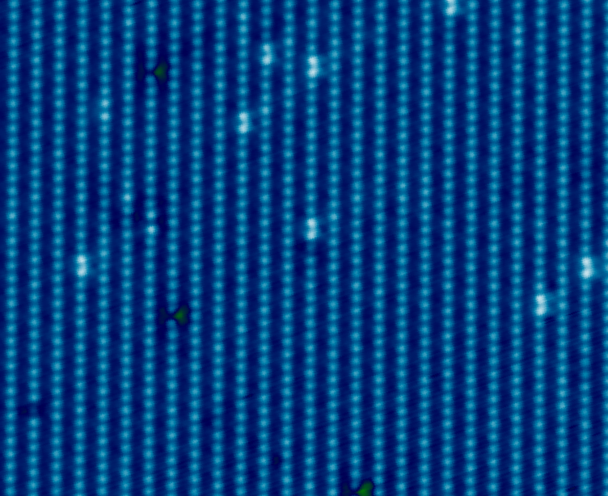
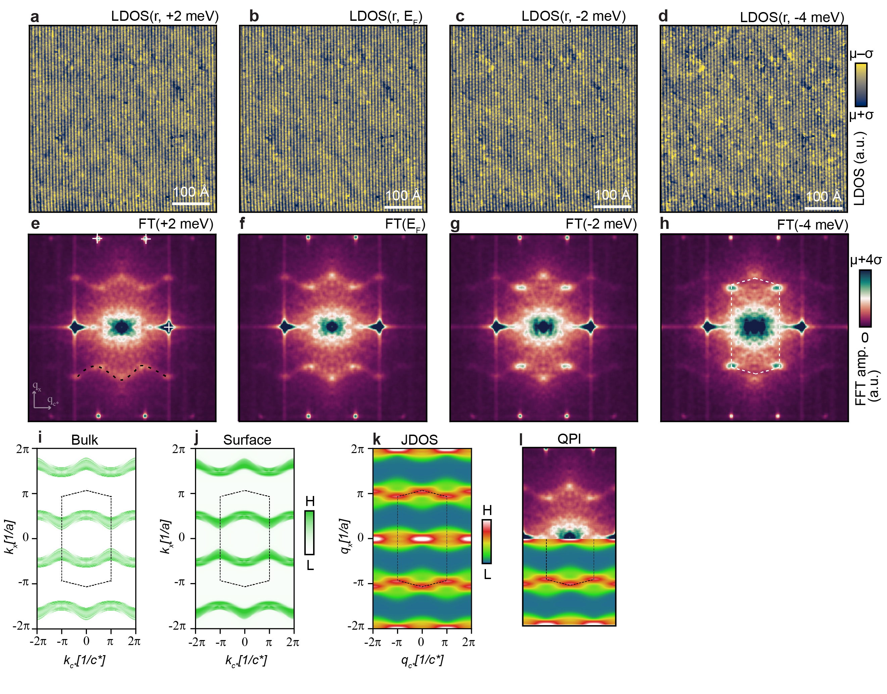
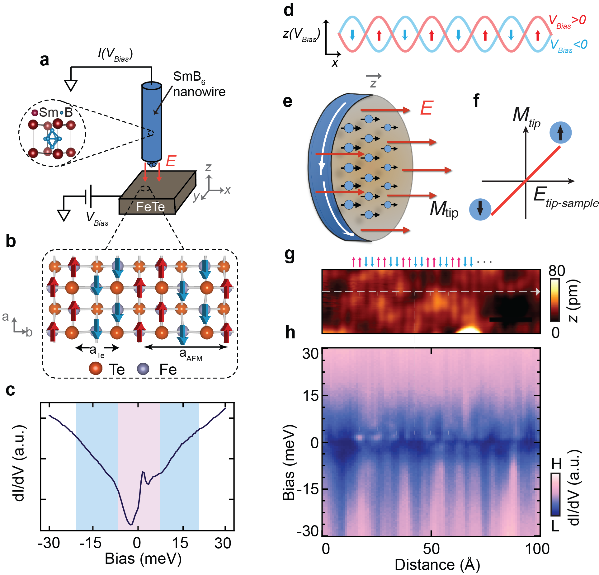
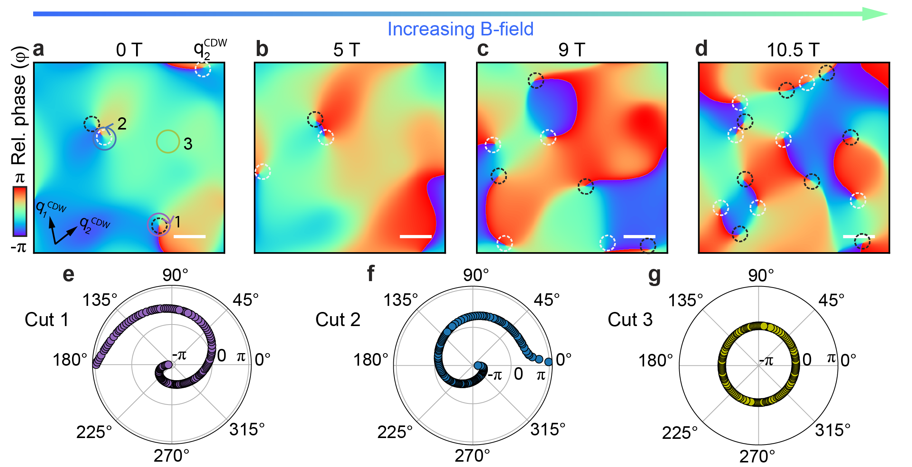

“Nobody ever figures out what life is all about, and it doesn’t matter. Explore the world. Nearly everything is really interesting if you go into it deeply enough.”
— Richard P. Feynman
Quantum materials · scanning tunneling microscopy · Quantum sensing · NV centers
Seeing is believing.
We develop quantum imaging and sensing techniques to investigate correlated quantum matter across scales, from atomic-resolution electronic structure to nanoscale magnetic and electronic dynamics.

Fig. 1 — STM topography of UTe₂What we work on
Four threads run through the lab
Each grounded in atomic-resolution imaging rather than bulk measurements alone.
Unconventional superconductivity
Quasiparticle interference and spectroscopic imaging of superconductors like UTe₂ and Fe(Se,Te)/Bi₂Te₃ to probe their pairing symmetry.
Topological phenomena
Spin-resolved tunneling and spectroscopy of topological Kondo insulators and antiferromagnets, including their surface states and response to external fields.
Intertwined charge & spin orders
Visualizing charge density waves, spin excitations, and topological defects in correlated materials such as 1T-TaS₂ and GdTe₃.
AI-driven imaging
Using machine learning to extract hidden order and structure from STM and NV-center imaging data across our quantum materials platforms.
Recent work
From the lab

2026Quasiparticle interference in triplet superconductor UTe₂

2025Axionic tunneling from a topological Kondo insulator

2024Melting the charge density wave in UTe₂ via paired topological defects
Interested in joining the lab?
We take PhD and Master's students each year, and we're always glad to hear from prospective collaborators.
Get in touch